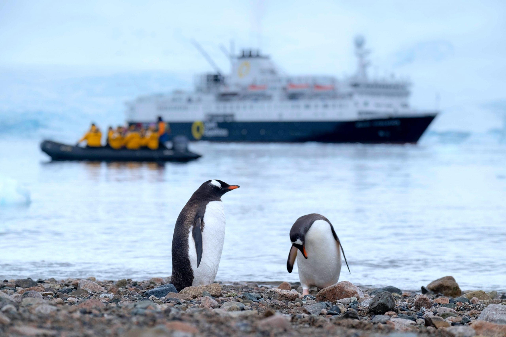
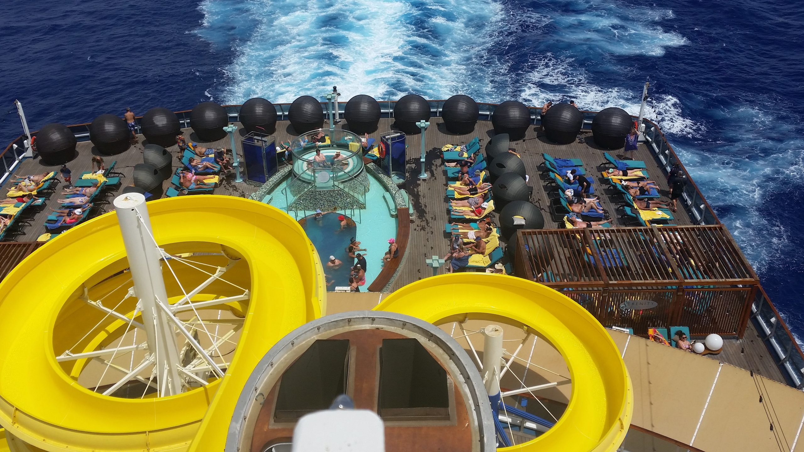
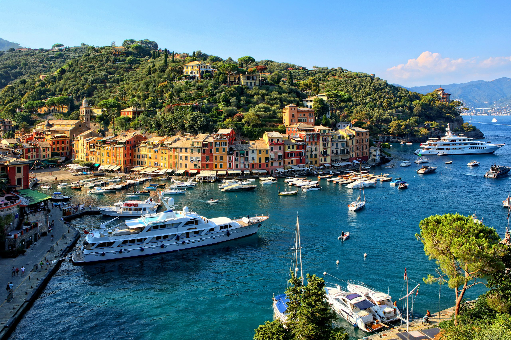

Do you know that 70% of Earth is covered by water? This is a wonderful fact if you are a traveler. It means no matter your dream destination, you can probably get there on a cruise. But, which cruise is best for you? Read on to find out.
If you are and adventurous person or life-long learner, consider an expedition cruise. Typically, expedition cruises occur on smaller ships with only 200 passengers. They have specialists on board to provide lectures and information and offer more flexibility within the itinerary to follow the wildlife. A pod of humpback whales is in the area? Let's go see it. 
For multi-generaltional trips, large cruise ships are a great option. As ships get bigger, they have more offerings on board so that everyone on the trip will be engaged and enjoy the trip. Traditional activities such as games and shows are available, but there are also ships with ropes courses, water parks, and even a roller coaster high above the sea! 
Do you prefer a more intimate experience with world-class service? If so, a small ship cruise will be the perfect fit. Small ship cruising is focused on destinations and cultural experiences. As they are able to get into smaller ports, you will be able to visit places other ships simply cannot enter. Small ships excel at providing service to their passengers because there are so few. Also, it is likely that you will get to know everyone on board: crew and passengers alike. 
Cruising Facts
GETTING THERE:
Cruises depart from many ports around the world. If you are flying or traveling a great distance to get to your cruise, it is recommended you arrive at least one day prior to your departure. This will allow a buffer in case of flight or traffic delays. Cruise ships rarely wait for passengers past the scheduled departure time.LANGUAGE:
Cruises departing from the U.S. will employ crew members from all around the world. However, most of these employees will speak English.MONEY/CURRENCY:
Rarely will cash be accepted onboard your cruise ship. Therefore, a credit/debit card will be needed to charge to your onboard account. If you prefer not to use a credit/debit card, then you may deposit cash with the onboard customer service. Any remaining cash at the end of the cruise will be refunded to you.ELECTRICITY:
Cruise ships typically use type A and type B plugs operating on 120V supply voltage and 60Hz. However, it may vary from ship to ship. Be sure to check with your travel advisor. Outlets are very limited in your stateroom.
5 THINGS TO PACK
- Comfortable Shoes. Whether onboard the ship or on land for an excursion, you will do a lot of walking.
- Formal Attire. Take advantage of the scheduled formal evenings aboard the ship.
- Backpack. For shore excursions, a backpack is a must to carry your towel, sunscreen, and other necessities for the day or to bring back souvenirs.
- Refillable Water Bottle. Most cruise ships have designated locations where you can fill a water bottle with ice and water. Perfect for going ashore and to reduce single use plastic bottles.
- Rain Jacket or Poncho. Shore excursions don't stop just because of some rain. So be prepared just in case.